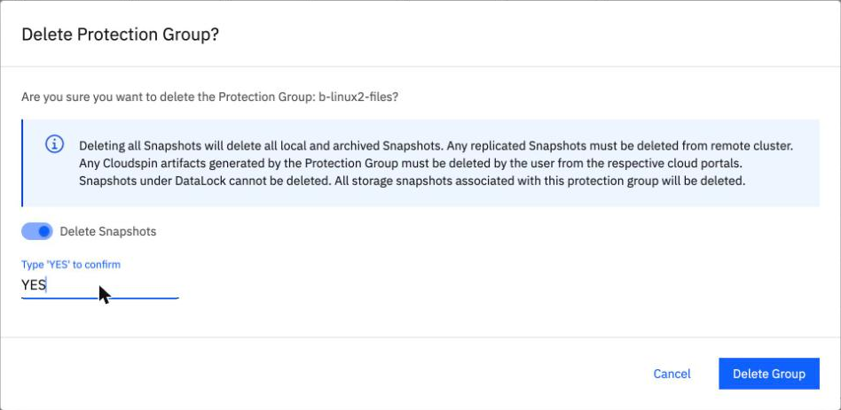
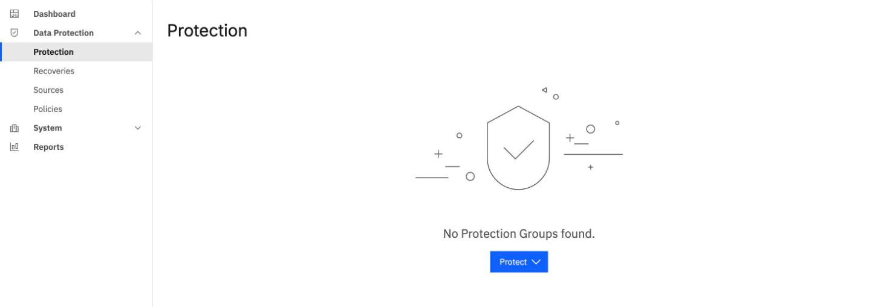
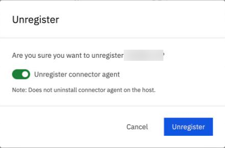
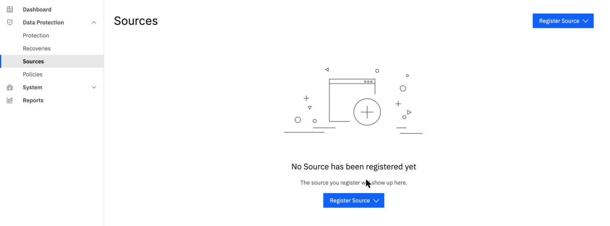

Final scenario: design Northgate's backups, then clean up
By the end of this unit you'll have chosen policies for four workloads, said how to restore and check each one, handled four things that go wrong, and put the clean-up in the right order.
Northgate Freight is a made-up haulier. It runs a Linux server ng-app-01 with files in /data, a Windows server ng-win-01 with files in C:\data and a SQL Server database labdb, and two VMs on OpenShift Virtualization. It wants all of it backed up, restorable, and tidy at the end of the pilot.
Every number and screen in this unit comes from real runs in our lab. Server names and addresses were changed to made-up ones, and server names are blurred in the screenshots. The unit reviews what Modules 3 to 6 covered. Allow about 20 minutes.
Choose the policy and the type for each workload
Northgate is running a pilot, and it will delete every test backup at the end. Make four design choices for it.
A new instance comes with four policies. Which should Northgate use for pilot backups it will delete?
Show the answer
Policy Runs Kept Data lock Gold every 4 hours 1 week 1 week Silver every 12 hours 2 weeks 2 weeks Bronze daily 30 days 30 days Basic daily 30 days none
Gold, Silver and Bronze carry a Compliance data lock equal to their retention, and a backup made with them can't be deleted until the lock ends. For a test, use Basic or your own policy.
What type of protection group backs up the folder /data on ng-app-01?
Show the answer
File-based. In the BRS console, Protect > Physical Server > File-based is the only choice, because it offers no volume-based type. A volume-based incremental reads the whole volume every time.
Northgate protects labdb with a policy that has no periodic full backup. What shows on the run page after an incremental?
Show the answer
A warning. In our lab the second run showed Warning, code [1-1-36], and said VDI backups need a periodic full backup. After we changed the policy, the next run was Succeeded with no warning.
The VMs are backed up. After the first full backup, the second run (an incremental) reads how much of the disks?
Show the answer
Run Read Sent Time First 128.86 GB 45.13 GB 2,443 s Second 128.86 GB 5.50 GB 1,357 s
In our lab the incremental read every disk in full again. What fell was the data sent, and with it the time. IBM's pages describe VM protection as intended for testing and proof of concept in the AU-SYD region, and when we tested it, it wasn't generally available.
Restore each one, and check it
A restore that says Succeeded doesn't tell you that everything came back. For each workload, what does Northgate's backup admin check?
The admin restores /data on ng-app-01. How do they show every file was recovered?
Show the answer
They check every file. In our lab the check sha256sum -c gave 503 of 503 files matching, after a restore of about 12 seconds in the first run and 23 seconds in the console run. Check by checksum even when a restore reports success: in earlier tests, restores in BRS and in IBM Storage Defender, another IBM backup product, returned hard-linked files empty. That's why our lab runs check by SHA-256.
From the command line, the admin restores C:\data\docs and writes the path that way. What happens?
Show the answer
It fails. The restore looks the path up in the snapshot's file view, where the drive is a folder named C. In the console the folder browser shows the drive as a folder named C, so the problem doesn't arise.
The admin drops labdb and restores it to its original place. What do they compare?
Show the answer
The row count and a checksum. In our lab, 100,000 rows and the same checksum, after a restore of 23 seconds.
The next backup of the SQL Server group reads 0 bytes and lists 0/0 objects, with no message that says why. What happened?
Show the answer
The database has a new ID. In our lab the source tree gave labdb the new ID 656, and the group still held 652. The run's Canceled message about a periodic full isn't the cause.
The admin restores the two VMs, 120 GiB of disks in all. How long did the restore take in our lab?
Show the answer
About an hour. The recovery ended Succeeded after 3,803 s (63.4 min). The restored VMs were Running 35 seconds after BRS created them. We checked the VMs and their files, not only the job status.
Four things that go wrong
Each of these happened in our lab. What does Northgate's backup admin see?
Review from unit 6.1. The admin patches ng-app-01 and reboots it. The nightly backup starts before anyone starts the Connector Agent. What does the run do?
Show the answer
It waits. The console can show 1 Failed during the wait, and in our lab that cleared when the run succeeded.
Review from unit 6.1. The admin reboots ng-win-01. Both agents are back after half a minute. What's still stopped?
Show the answer
SQL Server. Its start type is Automatic (Delayed Start). Check your database services as well as the agents.
Review from unit 6.2. The Upgradable count is 0 and Upgrade Agent is greyed out. Is anything wrong?
Show the answer
No. The Agents summary read 0 errors, 0 upgradable and 4 deployed, which means no agent is older than the current one.
Review from unit 6.3. The admin runs the migration tool twice, a week apart, after files changed in between. What reaches the VPC server the second time?
Show the answer
Nothing new. Run the tool once, at the moment of the switch. Deletions on the source don't reach the target either.
Clean up, in the right order
The pilot is over. In our lab the console route was: groups first, then sources, then the instance. Click where you'd click. After two misses, the right place is marked.

The admin deletes a protection group. Which control decides whether the group's backups are deleted too?
Show where
Right. The Delete Snapshots switch. It's off by default. Leave it off and the snapshots stay, and are still billed, until they expire. Snapshots under a data lock can't be deleted.

The last group is gone. Which menu item do you open next?
Show where
Right. Sources. You unregister each source next.

The admin unregisters a server that was registered through the Connector Agent. Which switch is on by default, and what doesn't it do?
Show where
Right. Unregister connector agent is on by default. The note says it doesn't uninstall the connector agent on the host, so the agent software stays on the server.

The Sources page is empty. Where does it say so?
Show where
Right. "No Source has been registered yet". Next comes the instance. Its policies and data-source connections go with it, so you don't need to delete them one by one.
The admin deletes the instance. Where does it go?
Show the answer
To the reclamation list. Both deleted instances went there, though in the first lab run they didn't. While an instance that used your own key sat there, Key Protect refused to delete the key: PROTECTED_RESOURCE_ERR, Key is protecting one or more cloud resources. Purge the reclamation first, then delete the key and the authorization.
What else does a lab with a ROVS cluster leave behind?
Show the answer
The Helm release, the service account and the test namespaces. Unregistering the Kubernetes source had already removed the agent's own namespace. We also had to delete the servers, the private endpoint and its security group, and the lab network by hand.
Three questions
Review from unit 3.2. Two runs in the console both say Incremental. How do you tell which was the full backup?
Show the answer
By Data Read. The console labels the first run Incremental too, so 92.6 MiB against 3 MiB is what tells them apart.
Northgate wants to delete its pilot backups at the end. Which policy lets it?
Show the answer
Basic. Gold, Silver and Bronze have a data lock equal to their retention, and a locked backup can't be deleted until the lock ends.
The admin deletes a protection group in the console and leaves Delete Snapshots off. What happens to the backups?
Show the answer
They stay. The switch is off by default, so turn it on, type YES and click Delete Group if you want the backups gone too.
You designed, checked and cleaned up a backup service
Use a policy with no lock for a pilot. Check every restore against figures taken before, because a Succeeded status doesn't tell you that everything came back. Expect a Linux Connector Agent to stay down after a reboot, and start it by hand. Delete groups with Delete Snapshots on, then sources, then the instance. VM backup wasn't generally available when we tested it.